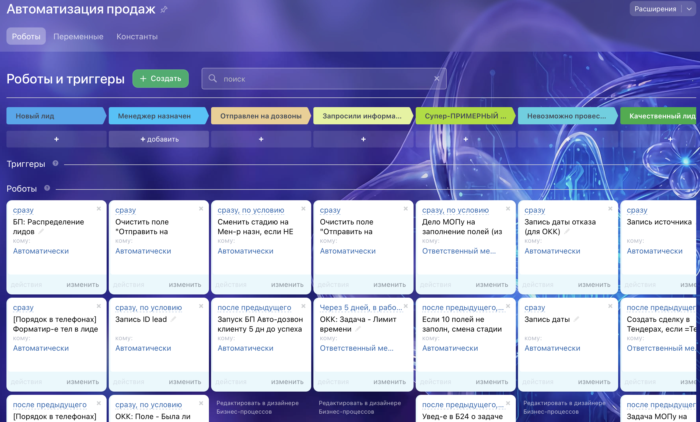
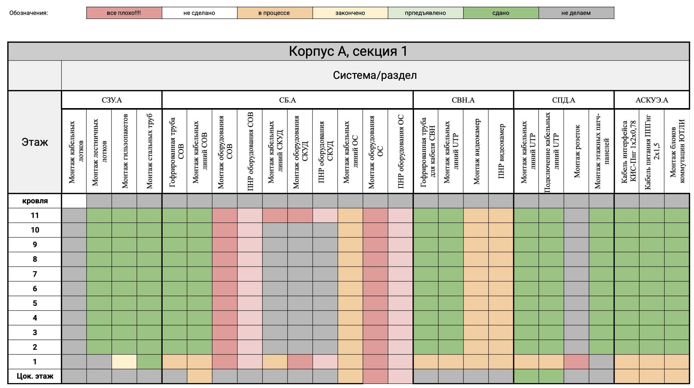

Подход, который работает почти в любом бизнесе
Здравствуйте, я Алексей Ширшов. Покажу свой подход к работе: он применим почти к любому бизнесу, а не только к стройке. В резюме — опыт и цифры, а здесь принципы, которыми руководствуюсь, рабочие инструменты и доказательства к ним.
За 7 минут вы поймёте обо мне больше, чем за час собеседования
Не просто управляю процессами, а проектирую систему, которая будет сама помогать в управлении
Люди в ней важны, а процессы ведут к общему результату → деньгам компании.
Я инженер из строительной сферы, и проектировать — это мой профессиональный навык, который я адаптировал к бизнесу и системе в нём.
Снижаю зависимость бизнеса от людей, включая меня
Любой бизнес работает руками людей, но я снижаю зависимость от незаменимых, и от себя в том числе. Процессы и правила описаны, знание держит система, а не один человек. Замена не обнуляет результат: новый входит по инструкции, преемник продолжает по описанному. Так система работает и без меня, на любом штате.
Слева показан пример реальной схемы взаимодействия между воронками в системе Битрикс 24. По ней работало более 40 сотрудников.

Понятна сотрудникам и прозрачна для руководства
Систему мало спроектировать, её нужно внедрить и поддерживать без лишней бюрократии — только те правила и знания, что помогают работать. Обучающие материалы собираю в академию, так новичку проще адаптироваться, а специальный отдел контроля качества не карает, а подсказывает, что поправить, и подсвечивает руководству проблемные места.
Навожу порядок по приоритетам, не ломая рабочее
Захожу по шагам: сначала закрываю срочное и забочусь о деньгах, потом нахожу проблемы и расставляю приоритеты. Что работает, не трогаю, а усиливаю. По отчётам вижу, где сбоит и где перегруз, и убираю ручную работу. Улучшаю постоянно, но комфортно для людей.
За счёт такого подхода менеджер, который ранее не справлялся с 70 клиентами, начал вести больше 130.

Считаю каждую копейку и трачу деньги с умом
Финансы держу под контролем. Веду платёжный календарь, отчёты по прибыли и движению денег: важно знать, где деньги, когда придут и не грозит ли кассовый разрыв. Собрал отдельную отчётность по объектам: сводит данные из десятка источников и разные методы учёта. По каждому вижу прибыль и убыток с точностью до 5–10 тысяч. В т. ч. веду отчёты юнит-экономики по клиентам на тех. обслуживании.
«Готов тратить и миллионы, если знаю, что вернётся в восемь раз больше».
Когда горит, разбираюсь сам и учу систему на ошибках
Мне пришлось подключиться к ведению объекта, где начались проблемы с управлением. За три недели я наладил систему найма, собрал команду, ввёл отчётность и выстроил работу с заказчиком. В итоге объект успешно довела до конца и сдала моя команда.
